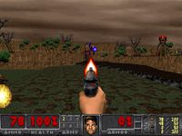

Freedoom
From DoomWiki.org
| Freedoom | |
|  | |
| Developer(s) | Chungy |
|---|---|
| Initial release | 0.1 (2003-04-16, 19 years ago) |
| Latest release | 0.12.1 (2019-10-22, 2 years ago) |
| Development status | Active |
| Target Platform | Any source port |
| License | BSD |
| Website | freedoom.github.io |
| Source Repository
(Git) |
GitHub |
| IRC Channel | OFTC #freedoom |
{kind=link}
{kind=link}
Freedoom is a project to create a free content stand-alone game based on the Doom engine. All material in the project is released under a modified BSD license, so other projects may reuse any of the Freedoom resources for their own purposes. In fact, this is a secondary goal of the project.
Freedoom produces three independent IWADs:
- Freedoom: Phase 1 is made up of four chapters, and is compatible with The Ultimate Doom PWADs.
- Freedoom: Phase 2 is an entire 32-level chapter, and is compatible with Doom II and Final Doom PWADs.
- FreeDM is a deathmatch game, containing no monsters in its entire mapset. Like Phase 2, it is also compatible with Doom II and Final Doom PWADs.
Phase 1 and Phase 2 are limit removing, with a compatibility goal for full Vanilla Doom planned for a future release. FreeDM, on the other hand, maintains a strict vanilla-compatibility requirement.
Freedoom is still under active development, not having yet reached a version 1.0, which should signify a complete set of resources, including sprites, textures, levels, music, etc, and some form of quality control over all of the project.
Contents
[hide]History[edit]
Freedoom was envisioned in 2001 by Captain Mellow on the Doomworld Forums in a thread titled barn-raising: open iwad project. This had quickly raised interest in such a project, with Simon Howard and Jon Dowland taking charge of the technical leads of the project, providing web hosting space and building up a DeuTex tree to build the IWAD. At this time, Freedoom was only aimed at providing a Doom II-compatible IWAD, as the sole game of the project.
In 2003, Jim McDougald had created a fork of Freedoom, a spin-off called FreeDM.[1] This had closely followed the main Freedoom development. However, development had been abandoned on FreeDM and rather than letting it die, Simon had merged its work back into the main Freedoom tree in 2006. Since Freedoom 0.5, FreeDM has been a regular component of the project as a whole.
After the release of Freedoom 0.6.2 in early 2008, the project remained inactive for nearly the rest of the year, while Catoptromancy had accumulated a large amount of resources to contribute to the project, prompting Mike Swanson to take up maintainership, converted Freedoom's main repository from Subversion to Git, and resumed activity on it in early December, finally releasing 0.6.3 on December 31, 2008.
Freedoom 0.6.4 was released in June 2009, partly in reaction to copyright infringement discovered in the source tree, several music and sounds files being identified as plagiarized from Duke Nukem 3D and mods of that game.[2] The entire body of the plagiarist's submissions was removed as a precaution against the likely possibility that none of them were legitimate entries. Even though this release was largely a reaction to that discovery, and the version number reflected a minor update to the 0.6 series, it is still notable for introducing a third IWAD target to the project, tentatively named Ultimate Freedoom at the time, and would later become Freedoom: Phase 1.
As of January 1, 2014, Freedoom had released version 0.8 and officially moved hosting of the Git repository and web space to GitHub, opening up a new issue tracker for contributors to submit problems and share in development discussions on the project. Game changes in 0.8 include the use of a BEX patch now included as part of the IWADs allowing Freedoom to display custom message strings instead of potentially trademark-infringing Doom message strings, FreeDM being re-targeted for vanilla Doom compatibility, and episode 4 of Ultimate Freedoom being Double Impact, a Cacoward-winning nine-level episode previously released as a PWAD.
In October 2014, Freedoom had released version 0.9, featuring unique names for the singleplayer-focused IWADs, and new file names to go with them. Prior to this release, Freedoom had referred to both the whole project and the IWAD with a file name of doom2.wad, which became Freedoom: Phase 2 with a file name of freedoom2.wad in this release. Likewise, Ultimate Freedoom with the file name doom.wad was renamed to Freedoom: Phase 1 with a file name of freedoom1.wad.[3] A new font was crafted for this release, replacing the menu, message, and HUD fonts entirely with a new stylization. Several of the sprites saw major enhancements from raymoohawk, who took the liberty of remastering the sprite artwork in the game and fine-tuning them with attention to details.
On December 17, 2015, Mike Swanson announced that the project goal of Freedoom had changed from Boom to vanilla[4]. By doing so, many changes were made to both Phase 1 and 2 to make them vanilla-compatible as much as possible, starting with converting legible Boom maps to vanilla.
In February 2017, version 0.11 had been released. This version marked the first release to be compatible in limit removing engines. Limit removing was chosen as an interim goal for version 0.11's release, and as a milestone for making version 1.0 vanilla-compatible, except for possible savegame buffer overflows of certain levels[5].
Levels[edit]
As of version 0.12.1, still subject to change.
Freedoom: Phase 1[edit]Chapter 1: Outpost Outbreak
Chapter 2: Military Labs
Chapter 3: Event Horizon
Chapter 4: Double Impact
|
Freedoom: Phase 2[edit]
|
Easter eggs[edit]
- Richard M. Stallman was previously featured as the replacement for the boss brain sprites.
- The texture SP_FACE1 is derived from pictures of prominent members of the Doom community (texture).
{kind=link}
Commercial derivatives[edit]
The BSD-type license used by Freedoom allows reuse in commercial projects; several different companies combined Freedoom with the Doom Classic port to create games sold for the iPhone or iPad:
- Doomsday: Hellraiser (by General Arcade)
- Doomsday 2: Legions of Hell (by General Arcade)
- Doomsday 3: Base Ganymede (by General Arcade)
- Doom's Knight Lite (by MoaLab)
- Gameception (by Nathaniel Herman. It includes a browser to download new maps on the fly)
- The Final Judgment (by Jading Tsunami) does something similar, but appears to be free
- Hell on Earth Lite (by iKreeda Games)
- Hell on Earth 2 (by iKreeda Games)
- Bastards (A western themed total conversion by Octavian Stirbel)
Freedoom assets were also used on MacOSX in the following titles:
- Doom's Knight (by MoaLab)
- Doomed Heretic (by MoaLab)
- Doomed Freedom (by MoaLab)
Unlike the Doomsday games, MoaLab's releases rely on the Oblige level generator to generate new levels, which are then put up for release on the app store.
Gloomy Dungeons series[edit]
Freedoom assets are also used in the Gloomy Dungeons series of first-person shooters for Android devices, primarily for sound effects. This is also carried over into the fork FreakLabs series.
Undoomed: Dungeon Shooter[edit]
One of the more unusual applications of Freedoom assets is used in Undoomed: Dungeon Shooter. This is an old-skool game for Android devices running on Unreal Engine 4. It contains a map generator, similar to Oblige or Slige, to procedurally generate levels for the campaign and the arena for the survival mode, potentially providing endless gameplay. Because it uses UE4, you can have true three-dimensional room-over-room effects. Freedoom assets used here include various monsters and textures.
Gallery[edit]
The old logo of Freedoom (December 2003 - March 2017)
MAP07 in version 0.5
MAP07 in version 0.9
MAP07 in version 0.10
{kind=link}
{kind=link}
{kind=link}
{kind=link}
See also[edit]
External links[edit]
- Official website
- Official Git repository
- Automatic Git builds
- Official forums (hosted on Doomworld)
- The story of Freedoom, historic account by fraggle
- Doomworld thread about "Hell on Earth II" for the iPhone
- Doomworld thread about "Doomsday: Hellraiser HD" for the iPad
- Doomworld thread about "Undoomed: Dungeon Shooter" for Android
- Leftover resources at Doomworld/idgames
References[edit]
- Jump up ↑ Doomworld Forums: FreeDM Emerges
- Jump up ↑ Doomworld Forums: Musical Plagiarism in Freedoom
- Jump up ↑ The commit The Great IWAD Renaming contains background and rationale.
- Jump up ↑ Doomworld Forums: Freedoom version 1.0 will be vanilla-compatible
- Jump up ↑ Doomworld Forums: Savegame buffer overruns